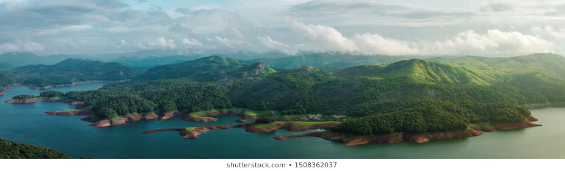

Idukki is a district in the Indian state of Kerala.Kerala is known as the spice garden of India as it has a variety of spices and is world-famous for it.Idukki is rich in forests and also known as the "Spice Garden of Kerala". Since the summers in Kerala provide all the sufficient conditions, it becomes the best time for their cultivation.
Beauty of Idukki
Kerala is God’s Own Country and the heart of God’s own country is Idukki. Idukki, a land-locked district, is counted in the list of most stunning, calm, and tranquil destinations in Kerala and even in the world. Idukki, one of the most visited districts in India, is like a book of beauty where every forest, river, stream, plantation or tea garden is just another page of charm. At Idukki, you cuddle tenderly in the lap of impeccably magnificent natural beauty. Nature showers its majestically enchanting grace in every nook and corner of this utopia.